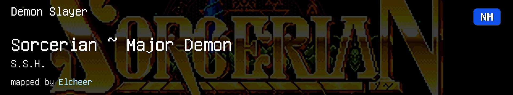
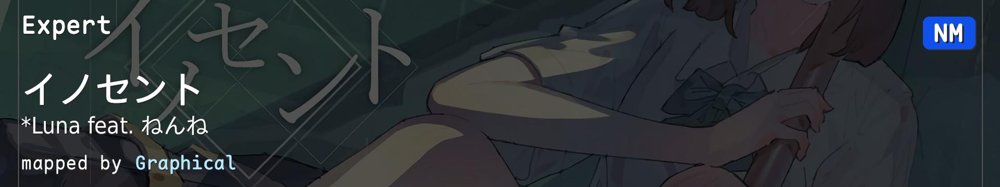
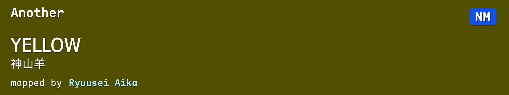
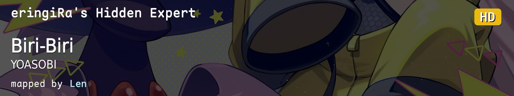
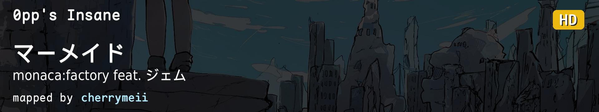
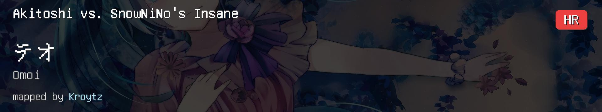
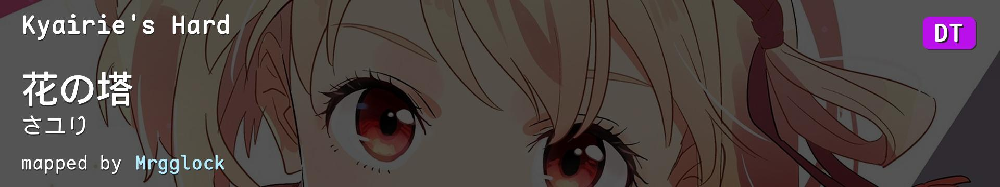
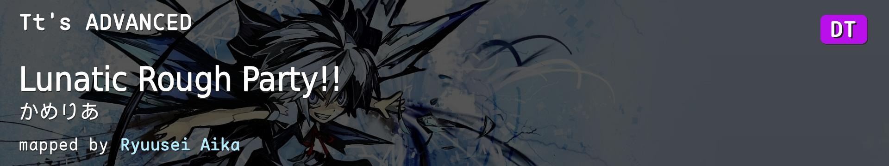
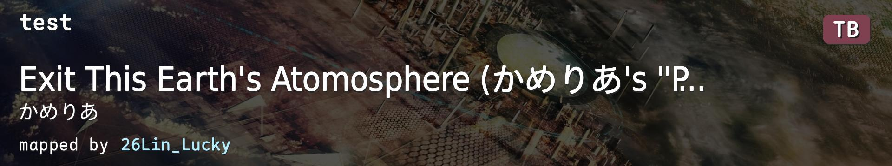

| # | BID | Beatmap Info | CS | HP | OD | AR | Hit Length | BPM | Stars | Notes |
|---|---|---|---|---|---|---|---|---|---|---|
| 1 | 2643212 |  | 4.0 | 5.0 | 7.50 | 8.00 | 4:14 (2070x) | 159.91 | 4.95 | 串 |
| 2 | 4049848 |  | 4.0 | 5.0 | 9.00 | 9.00 | 3:59 (1336x) | 128.00 | 4.82 | 128BPM手控 |
| 3 | 2141084 |  | 4.0 | 5.6 | 7.40 | 8.40 | 2:48 (802x) | 118.00 | 4.40 | 节奏/读谱 |
| 4 | 4413426 |  | 4.5 | 7.0 | 8.00 | 6.00 | 2:58 (883x) | 172.00 | 4.90 | AR6 SL0 |
| 5 | 3434620 |  | 4.0 | 5.0 | 8.00 | 9.00 | 2:50 (1109x) | 224.00 | 4.67 | alt/tech |
| 6 | 1531842 |  | 5.2 | 7.0 | 10.00 | 10.00 | 3:23 (1303x) | 185.00 | 5.03 | HR综合 |
| 7 | 4642091 | 9.1 | 7.0 | 9.80 | 9.80 | 3:11 (984x) | 175.00 | 5.03 | 小圈 | |
| 8 | 3714483 |  | 3.2 | 4.0 | 8.44 | 9.67 | 2:58 (1401x) | 255.00 | 5.07 | 跳切 |
| 9 | 1913582 |  | 3.7 | 5.0 | 8.58 | 9.67 | 1:13 (664x) | 360.00 | 5.09 | 高速/tech |
| 10 | 4051780 |  | 3.6 | 4.0 | 8.00 | 9.50 | 5:23 (2847x) | 200.00 | 5.82 | 经典曲目，但是5* |